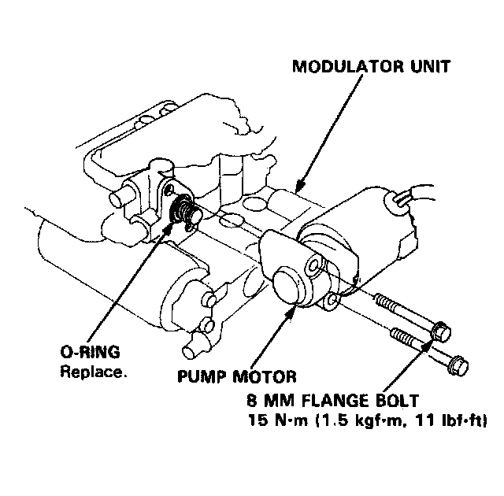

Brake Fluid Pump: Service and Repair

Pump Motor Replacement
The modulator unit contains high-pressure brake fluid Be sure to bleed the high-pressure fluid from the modulator unit before removing the pump motor.
1. Bleed the high-pressure brake fluid from the modulator unit. Service and Repair
2. Remove the modulator unit from the car.
3. Remove the 8 mm flange bolts from the modulator unit, and remove the pump motor.
4. Install the pump motor in the reverse order of removal.
NOTE:
- After installing the modulator unit, add fresh brake fluid until the reservoir is refilled to the specified level, and bleed air from the system. Modulator Unit Bleeding (ABS)
- Turn the ignition switch on (II), and check the ABS indicator light operation.